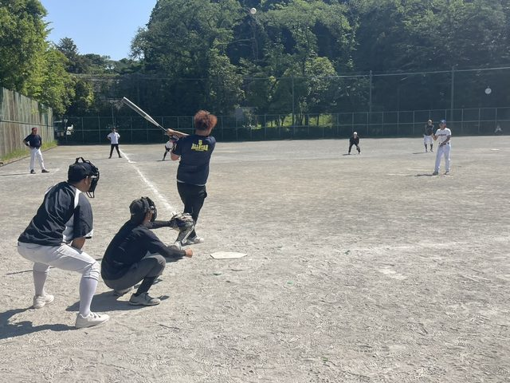

注意！「強盗殺人事件の捜査をかたるニセ警察詐欺」にご注意ください
第四回保土ヶ谷防犯協会からの情報共有です。警察官を名乗り、「栃木県で発生した強盗殺人事件の主犯格があなた名義の口座を知っている」「新しい口座を作り、全財産を移して」などと言う手口が確認されています。
警察官や公的機関を名乗る電話であっても、口座の作成や資金の移動を求められた場合は、すぐに応じず、いったん電話を切って家族や警察署へ確認してください。地域で声をかけ合い、被害を防ぎましょう。
川島第四町内会の公式なお知らせと、地域の皆さまから寄せられたお知らせを区別して掲載します。掲載期間を過ぎた情報は自動で非表示になります。
川島第四町内会の行事・活動報告・写真掲載・清掃・防災などの公式なお知らせです。町内会からのお知らせは固定掲載として管理します。
第四回保土ヶ谷防犯協会からの情報共有です。警察官を名乗り、「栃木県で発生した強盗殺人事件の主犯格があなた名義の口座を知っている」「新しい口座を作り、全財産を移して」などと言う手口が確認されています。
警察官や公的機関を名乗る電話であっても、口座の作成や資金の移動を求められた場合は、すぐに応じず、いったん電話を切って家族や警察署へ確認してください。地域で声をかけ合い、被害を防ぎましょう。

2026年5月17日に開催されたソフトボール大会では、川島第四町内会は惜しくも第3位となりました。当日は西谷中学校野球部から4名の皆さんが試合に参加してくれ、大活躍してくれました。町内会役員の皆さんも選手として奮闘し、会場からは温かい応援の声もたくさん寄せられました。地域の皆さんが一緒になって盛り上がる、楽しく一体感のある大会となりました。大会当日の写真をGoogleドライブでご覧いただけます。サムネイル画像をクリックしても写真一覧へ移動できます。
さわやか清掃は日曜日9時から実施します。集合場所は川島第4町内会館です。雨天中止です。第1回は6月28日、第2回は9月20日、第3回は12月20日、第4回は3月21日を予定しています。
新しい情報が入り次第、こちらに掲載します。
小学校・中学校のPTA、部活動、少年野球・サッカー・バスケなどの習い事、ゴルフコンペ・趣味の集まり・交流会、消防団、地域のお店、地域団体や住民の方から寄せられた情報など、地域に関係するお知らせを幅広く掲載対象としています。
地域情報が入り次第、こちらに掲載します。